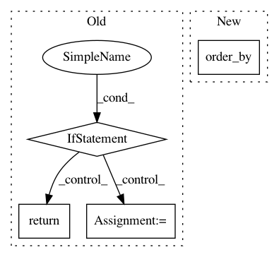

8bc46bda10949ec121c784fa0dd70deea12438f9,foreman/data_refinery_foreman/foreman/management/commands/rerun_salmon_old_samples.py,,update_salmon_versions,#Any#,37
Before Change
.values_list("organism_index__salmon_version", flat=True)\
.distinct())
if len(salmon_versions) <= 1:
// only apply this command on experiments that have more than one salmon version applied on their samples
return
latest_salmon_version = salmon_versions[0]
// find the samples that were not processed with `latest_salmon_version` and trigger new processor jobs for them
newest_computational_results = ComputationalResult.objects.all()\
.filter(
samples=OuterRef("id"),
processor__name=ProcessorEnum.SALMON_QUANT.value["name"]
)\
.order_by("-created_at")
samples = experiment.samples.all().annotate(
salmon_version=Subquery(newest_computational_results.values("organism_index__salmon_version")[:1])
)\
After Change
logger = get_and_configure_logger(__name__)
def update_salmon_versions(experiment: Experiment):
quant_results = get_quant_results_for_experiment(experiment)\
.order_by("-organism_index__created_at")\
.prefetch_related("organism_index")\
.prefetch_related("samples__original_files")
In pattern: SUPERPATTERN
Frequency: 3
Non-data size: 4
Instances
Project Name: AlexsLemonade/refinebio
Commit Name: 8bc46bda10949ec121c784fa0dd70deea12438f9
Time: 2019-08-22
Author: arielsvn@gmail.com
File Name: foreman/data_refinery_foreman/foreman/management/commands/rerun_salmon_old_samples.py
Class Name:
Method Name: update_salmon_versions
Project Name: cmu-db/ottertune
Commit Name: 8cec62160ffd56f90c781f7524f643b95896c455
Time: 2020-01-08
Author: dvanaken@cs.cmu.edu
File Name: server/website/website/utils.py
Class Name: TaskUtil
Method Name: get_tasks
Project Name: okfn-brasil/serenata-de-amor
Commit Name: a460674c772c2c0685148c8eb94b1743afea71d5
Time: 2017-09-28
Author: cuducos@users.noreply.github.com
File Name: jarbas/dashboard/admin.py
Class Name: ReimbursementModelAdmin
Method Name: get_search_results